In this lab you will be mounting a rubber band to a horizontal surface for two exercises. The first exercise will require you to attach a variety of masses to your rubber band, and the second will require you to attach your phone to your rubber band. Figure 3 shows a possible setup. Note that the setup for both exercises will be similar.
Exercise 1
In this experiment you will be using some masses and your phone to measure characteristics of simple harmonic motion. You will build an apparatus and take data for analysis. Be sure to include a picture of your setup if you can!
The process of building your experiment will be similar to the procedure you used to make apparatus for your previous lab, &Ldquo;Pendulum.” There is a variety of ways in which you could build this apparatus. Please read through all of the instructions before considering alternate steps.
Collect all of the materials you will need for this setup: rubber band, tape, paper clips, zip-lock bags, makeshift weights (sugar, flour, salt, cornstarch, coins). Optional items include scissors and zip ties.
Find the location where you will build your apparatus. You should be fine with building this wherever you built your pendulum from the previous lab.
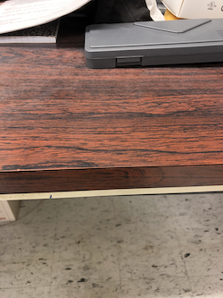
In this lab you will have your phone oscillating on a rubber band, so you will want to make sure your phone is not suspended too high, and that you can place a cushion underneath it.
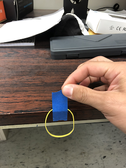
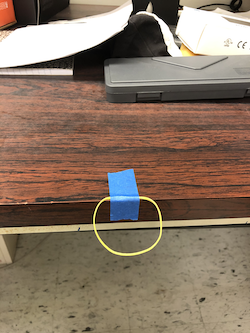
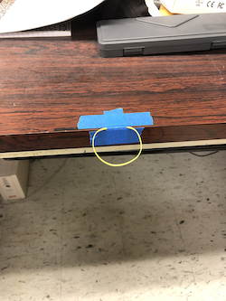
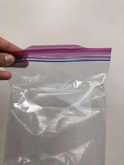
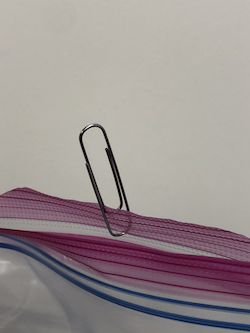
Once you have your setup, it should look something like this:
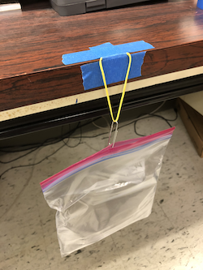
You may consider alternate mounting methods if you have a solution that is better for your space.
Note: You will want to place a cushion under your apparatus in case the rubber band breaks, or your masses or phone slip.
US Coins:
| Dollar | Half Dollar | Quarter | Dime | Nickel | Penny |
|---|---|---|---|---|---|
| 8.1g | 11.3g | 5.7g | 2.3g | 5.0g | 2.5g |
Batteries:
| AA | AAA | 9-V | D | C | |
|---|---|---|---|---|---|
| Alkaline | 23g | 11.5g | 45g | 135g | 65g |
| Lithium | 15g | 7.6g | 37g | - | - |
| Rechargable Ni-MH | 31g | 14g | - | 160g | 80g |
Household goods:
| Metric equivalent (ml) | Water | All Purpose Flour | Granulated White Sugar | Table Salt | |
|---|---|---|---|---|---|
| Density (g/ml) | 1g/ml | 0.6g/ml | 0.92g/ml | 1.26g/ml | |
| 1 cup | 237ml | 237g | 130g | 200g | 273g |
| 1 teaspoon | 4.9ml | 4.9g | 3.3g | 4g | 5.7g |
| 1 tablespoon | 14.8ml | 14.8g | 8.5g | 12.6g | 17g |
A better way to determine the spring constant would be to vary the mass and measure the stretch for each mass. From many data points we could create a plot and perform a fit.
For this lab you will hang a zip-lock bag on a rubber band, and add mass to the bag. You will measure the length of the rubber band as you add more and more mass.
Exercise 2
In this exercise you will be adding masses and collecting data on the length change of your rubber band.
Do not leave masses on your elastic for too long as this with deform and stretch the rubber band. However, do wait until your rubber band has reached equilibrium for each mass.
Question 1
a) What tool did you use to make your length measurements?
b) What is your uncertainty?
Question 2
a) Describe the masses you used.
b) Estimate your uncertainty in your mass values.
c) What are the sources of uncertainty here?
Exercise 3
In this exercise you will be analyzing the data from Exercise 2 to determine if a rubber band obeys Hooke's Law.
Question 3
a) Based on the equation you derived in last week's lab, what should the functional form of this plot be? i.e. (quadratic, root, linear, exponential, etc.)
b) What is the shape of your graph, does it look linear?
You may find that your data is not explicitly linear but has linear like regions. Below in Figure 6 you see on the left a plot of some data that we collected. You'll notice it is not linear, but if we focus only on the regions for small masses or on the regions for large masses it behaves pretty linearly. This is shown with the example purple and green best fit lines.
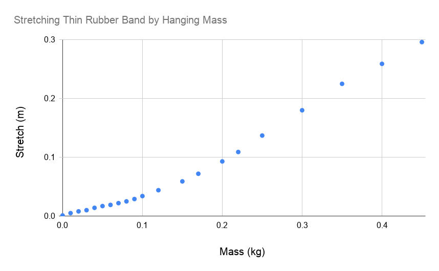
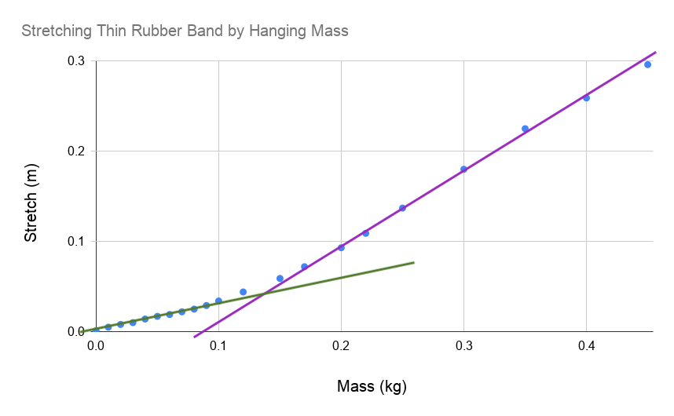
Question 4
Over what region or regions of mass does the plot look linear?
You will be determining from the slope, of the linear region(s). Just like the previews week, you will need to propagate the uncertainty from your slope to your value of . Very similar to last week, the equation for the uncertainty in , , is given by:
Question 5
What is the value of in your linear regime or regimes?
Question 6
Does your rubber band appear to obey Hooke's law? Explain your reasoning.
Exercise 4
In this exercise you will plot vs. and discuss it.
Another way we can analyze if your rubber band obey Hooke's Law is to examine the spring constant. An ideal spring has constant over all masses attached.
Question 7
a) Is there a region in which is constant?
b) If so, how does that region compare to the linear regime found above?
You may find that varies with mass. This will be an important consideration in experiment 2.
Exercise 5
In this exercise you will use the data you collected an analyzed in Exercises 2 and 3 to measure the mass of your phone.
Question 8
a) What is the displacement y with your phone as your mass?
b) Using your data from experiment 1 and your y for your phone, estimate the weight of your phone.
c) How does this value compare to what you find online? Note that cases and other things on your phone will increase your estimated weight.
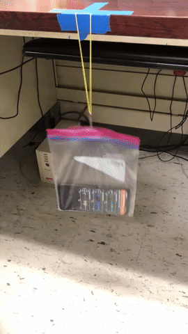
The second experiment for next week will involve your putting your phone in the zip-lock bag and then setting it in motion. You will use the “Acceleration without g” to measure the acceleration experienced by your phone. You will then use the acceleration to measure the period, and the spring constant of the rubber band.
As we do for a pendulum, we typically talk about the period of the position and not the acceleration. You will be measuring acceleration. Since we know that the mass on a spring is also a simple harmonic oscillator, we know that the position as a function of time looks like the following:
where is the amplitude or the initial displacement, and is the angular frequency.
Exercise 6
In experiment 2 you will use your apparatus from experiment 1 to explore simple harmonic motion. You will use a PhyPhox enabled device to measure the period of the simple harmonic motion of your rubber band.
For this part of the lab you will want ensure that you are working in a linear regime. This means that you may need to adjust the mass that you will be hanging so that you are in a linear regime. i.e. If you answered 0.200 kg - 0.350 kg for Question 4, you will want to adjust you're hanging mass to be in that region.
Question 9
In what axis will your data be collected?
You should not use the time delay function used in Pendulum.
You should expect to see significant damping in this data. Figure Guac shows some sample data
Figure 8 shows sample data. Notice the regions of junk data and real data.
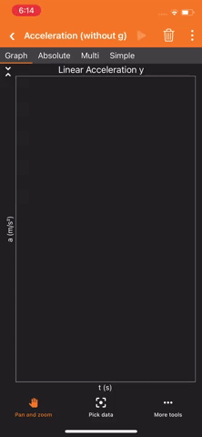
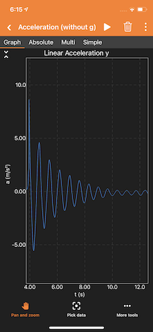
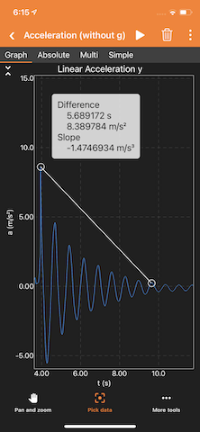
Figure 9 shows how you will be collecting your data.

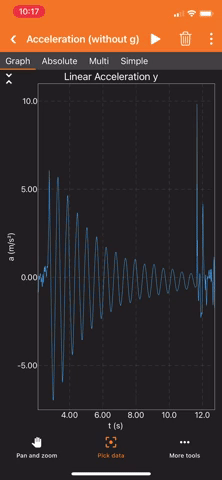
To calculate the period T, divide your time by n is the number of periods, not peaks.
We want the change in mass to be small. That way the spring constant is roughly constant over that regime.
You can add masses in a separate bag as shown below if you are using something messy such as water or flour.


Exercise 7
In this exercise, you will analyze the data collected in the Exercise 5 to determine the value of using the lens of simple harmonic motion.
Question 10
a) What is the expression for the period, , as a function of mass, , and the spring constant, .
b) If you were to plot vs should you fit a line to it? Why or why not?
Last week you had a very similar expression for period. We analyzed it by linearizing the equation and performing a linear fit.
Question 11
How would you linearize the period with respect to mass? (What's the equation?)
Again, you will have to propagate your uncertainty from the slope to your measurement of . The equation is the same as it was before. That is, Equation 1, hold true here as well.
Question 12
a) What is the expression for the slope of your line?
b) What is the k value from your fit data?
Question 13
Using the value that is in the regime closest to the mass of your phone, compare the two values. Do they agree?
Question 14
If you were to asked to give the most precise method of measuring the spring constant which experiment would you use an why?
Exercise 8
Write a short summary of this lab. Describe the two experiments you performed and discuss how your two measurements of relate.